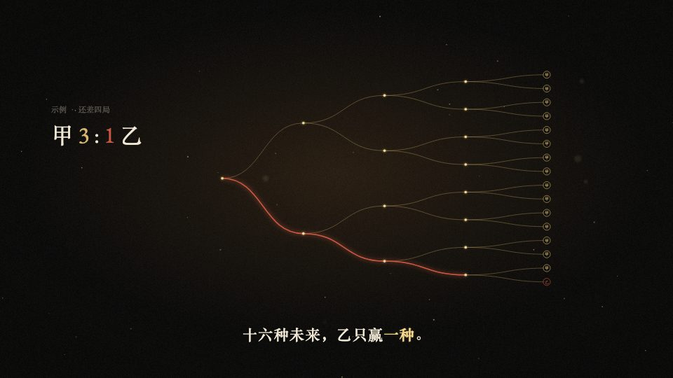

适用：数据 / 史料 / 因果
年份、文献和逐步绘制的曲线保留稳定对应。
在我们这里如何使用：曲线标示意或来源；不能让细线和大留白压过解释。

来自 weilanx README。其作品预览、配方与组件已保存；作者原配音、真人素材和音乐并未在上游公开。
年份、文献和逐步绘制的曲线保留稳定对应。
在我们这里如何使用：曲线标示意或来源；不能让细线和大留白压过解释。
讲历史、科学、数学的横屏 16:9 风格，像一部在烛光下翻古籍的纪录片：近黑底、金色细线、衬线字，每个年代用「年份抬头 + 文献引用」开场。画面语法是从一支参考视频里拆出来的（参考视频不进 git），组件和示例都是重写的，没有沿用原片的内容、文案和水印。
src/library/gilded/（目录见 src/library/README.md「暗金文献风」一节）library-gilded（src/library/previews/GildedDemo.tsx，45 秒，9 场把所有组件演一遍）| 期数 | 主题 | 画幅 |
|---|---|---|
| ep23-wheat-chessboard | 棋盘上的麦粒（33.5 秒 demo，无口播；锚词「一点点」，高潮踩配乐 17.45 秒重拍，中英字幕） | 横屏 16:9 |
| ep24-birthday-paradox | 生日悖论（2 分 05 秒，无口播；锚词「巧合」，两个高潮踩配乐 17.45 秒重拍和 102.52 秒整段重新进来，中英字幕；整片在同一个日历环世界里推拉） | 横屏 16:9 |
| ep32-love-lasts | 热恋会过期，但爱不会（2 分 17.5 秒，无口播；锚词「过期」踩 17.45 秒重拍，「依恋」踩 102.52 秒；开场心跳踩 0/5/7/8 拍，回落段 11 下硬拍点亮 11 个脑区，中英字幕；一颗金心贯穿全片） | 横屏 16:9 |